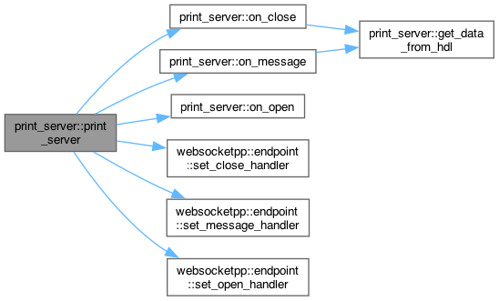
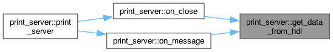
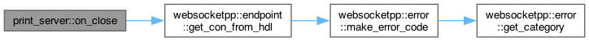
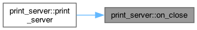
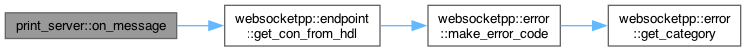
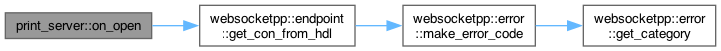
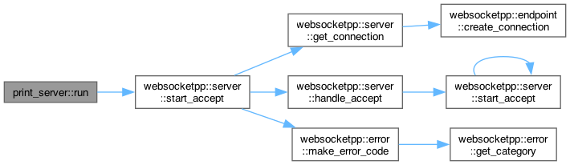

Loading...
Searching...
No Matches
print_server Class Reference
Public Member Functions | |
| print_server () | |
| void | on_open (connection_hdl hdl) |
| void | on_close (connection_hdl hdl) |
| void | on_message (connection_hdl hdl, server::message_ptr msg) |
| connection_data & | get_data_from_hdl (connection_hdl hdl) |
| void | run (uint16_t port) |
| print_server () | |
| void | on_open (connection_hdl hdl) |
| void | on_close (connection_hdl hdl) |
| void | on_message (connection_hdl hdl, server::message_ptr msg) |
| void | run (uint16_t port) |
Detailed Description
Definition at line 19 of file associative_storage.cpp.
Constructor & Destructor Documentation
◆ print_server() [1/2]
|
inline |
Definition at line 21 of file associative_storage.cpp.
21 : m_next_sessionid(1) {
22 m_server.init_asio();
23
27 }
void on_message(connection_hdl hdl, server::message_ptr msg)
Definition associative_storage.cpp:47
void set_message_handler(message_handler h)
Definition endpoint.hpp:322
void set_open_handler(open_handler h)
Definition endpoint.hpp:277
void set_close_handler(close_handler h)
Definition endpoint.hpp:282
Here is the call graph for this function:

◆ print_server() [2/2]
|
inline |
Definition at line 40 of file enriched_storage.cpp.
40 : m_next_sessionid(1) {
41 m_server.init_asio();
42
46 }
Here is the call graph for this function:
Member Function Documentation
◆ get_data_from_hdl()
|
inline |
Definition at line 60 of file associative_storage.cpp.
60 {
61 auto it = m_connections.find(hdl);
62
63 if (it == m_connections.end()) {
64 // this connection is not in the list. This really shouldn't happen
65 // and probably means something else is wrong.
66 throw std::invalid_argument("No data available for session");
67 }
68
69 return it->second;
70 }
Here is the caller graph for this function:

◆ on_close() [1/2]
|
inline |
Definition at line 38 of file associative_storage.cpp.
38 {
40
41 std::cout << "Closing connection " << data.name
42 << " with sessionid " << data.sessionid << std::endl;
43
44 m_connections.erase(hdl);
45 }
connection_data & get_data_from_hdl(connection_hdl hdl)
Definition associative_storage.cpp:60
Definition associative_storage.cpp:14
Here is the call graph for this function:

Here is the caller graph for this function:

◆ on_close() [2/2]
|
inline |
Definition at line 54 of file enriched_storage.cpp.
54 {
56
57 std::cout << "Closing connection " << con->name
58 << " with sessionid " << con->sessionid << std::endl;
59 }
connection_ptr get_con_from_hdl(connection_hdl hdl, lib::error_code &ec)
Retrieves a connection_ptr from a connection_hdl (exception free)
Definition endpoint.hpp:643
Here is the call graph for this function:
◆ on_message() [1/2]
|
inline |
Definition at line 47 of file associative_storage.cpp.
47 {
49
50 if (data.name.empty()) {
51 data.name = msg->get_payload();
52 std::cout << "Setting name of connection with sessionid "
53 << data.sessionid << " to " << data.name << std::endl;
54 } else {
55 std::cout << "Got a message from connection " << data.name
56 << " with sessionid " << data.sessionid << std::endl;
57 }
58 }
Here is the call graph for this function:

Here is the caller graph for this function:

◆ on_message() [2/2]
|
inline |
Definition at line 61 of file enriched_storage.cpp.
61 {
63
64 if (con->name.empty()) {
65 con->name = msg->get_payload();
66 std::cout << "Setting name of connection with sessionid "
67 << con->sessionid << " to " << con->name << std::endl;
68 } else {
69 std::cout << "Got a message from connection " << con->name
70 << " with sessionid " << con->sessionid << std::endl;
71 }
72 }
Here is the call graph for this function:
◆ on_open() [1/2]
|
inline |
Definition at line 29 of file associative_storage.cpp.
29 {
30 connection_data data;
31
32 data.sessionid = m_next_sessionid++;
33 data.name.clear();
34
35 m_connections[hdl] = data;
36 }
Here is the caller graph for this function:
◆ on_open() [2/2]
|
inline |
Definition at line 48 of file enriched_storage.cpp.
48 {
50
51 con->sessionid = m_next_sessionid++;
52 }
Here is the call graph for this function:

◆ run() [1/2]
|
inline |
Definition at line 72 of file associative_storage.cpp.
72 {
73 m_server.listen(port);
74 m_server.start_accept();
75 m_server.run();
76 }
void start_accept(lib::error_code &ec)
Starts the server's async connection acceptance loop (exception free)
Definition server_endpoint.hpp:121
Here is the call graph for this function:

Here is the caller graph for this function:
◆ run() [2/2]
|
inline |
The documentation for this class was generated from the following files:
- libraries/fc/vendor/websocketpp/examples/associative_storage/associative_storage.cpp
- libraries/fc/vendor/websocketpp/examples/enriched_storage/enriched_storage.cpp